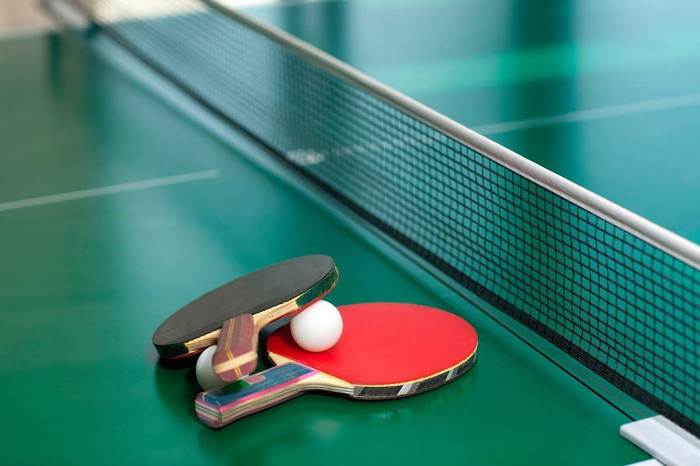

В заключительный день этапа состоялся большой масс-старт у мужчин, в котором выступили 60 биатлонистов, в том числе 9 белорусов. После огневых рубежей из положения лежа лидерство в гонке захватил наш Дмитрий Лазовский, отстрелявший оба раза чисто. Первая стойка у белоруса не задалась - два штрафных круга отбросили его на четвертое место, но благодаря осечкам конкурентов отставание по времени получилось небольшим. Перед заключительной стрельбой на победу в равной степени претендовали пять человек, но только Лазовскому удалось обойтись без промахов. На заключительный круг Дмитрий ушел с преимуществом в 25 секунд, и этот отрыв наш спортсмен благополучно довез до финиша. Второе и третье места заняли россияне Александр Логинов и Антон Бабиков соответственно.
В цветочную церемонию попал еще и Антон Смольский, который с тремя штрафными кругами финишировал на пятой позиции. Илья Авсеенко стал 14-м, Иван Тулатин расположился вслед за ним, остальные белорусы закончили гонку вне топ-20. В 12.00 стартует гонка с массовым стартом у женщин, куда заявлены четыре представительницы Беларуси.-0-

Среди женщин вне конкуренции оказалась вторая ракетка мира Арина Соболенко. У мужчин лучшим теннисистом уходящего года признан Николай Голяк. Лучшим игроком парного разряда стал Иван Лютаревич.
У юниоров лауреатами стали Ричард Лацис и Юлия Перепехина. В номинации "Прорыв года" лучшей оказалась Алена Фалей, которая в мировом рейтинге поднялась с 765-го на 298-е место. Ирина Шиманович отмечена в номинации "Результат года" за успешное выступление на "Ролан Гаррос". В Париже она преодолела квалификационный барьер и впервые в карьере вышла в основную сетку турнира серии "Большого шлема", а потом пробилась во второй раунд, где уступила Арине Соболенко. За бойцовский характер специальной награды удостоена Яна Колодынска. Лучшей командой уходящего года признана минская СДЮШОР "Смена". Всего БТФ назвала лауреатов в 15 номинациях.-0-
Ранним утром воскресенья по минскому времени "Калгари" принимал "Тампу-Бэй". Во втором периоде "огоньки" провели в чужие ворота три шайбы за пять минут, автором одного из голов стал Шарангович. Таким образом, белорус повторил рекорд клуба по продолжительности голевой серии для новичков - Егор забрасывает в пятом матче подряд. Также белорус побил и собственное достижение в НХЛ, набрав очки в шестой игре кряду. Шайба Шаранговича в итоге оказалась победной ("Калгари" выиграл со счетом 4:2), а самого Егора признали третьей звездой встречи.
Всего белорус провел на льду почти двадцать минут, нанес два броска и закончил поединок с показателем полезности "0". В 31 матче нынешнего сезона в активе нашего хоккеиста 19 результативных баллов (11 голов и 8 передач). Выйти в единоличные рекордсмены клуба Шарангович попробует 19 декабря, когда "Калгари" на своем льду встретится с "Флоридой".-0-